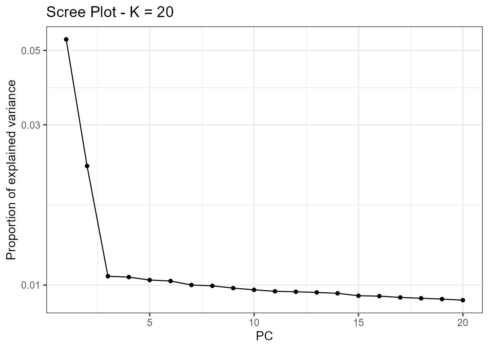
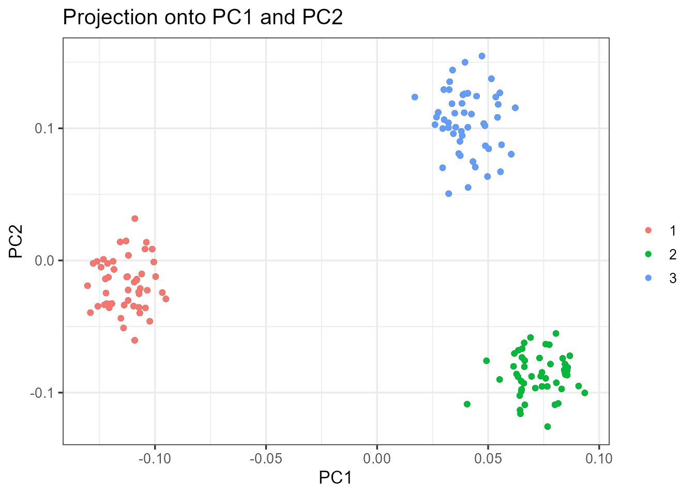
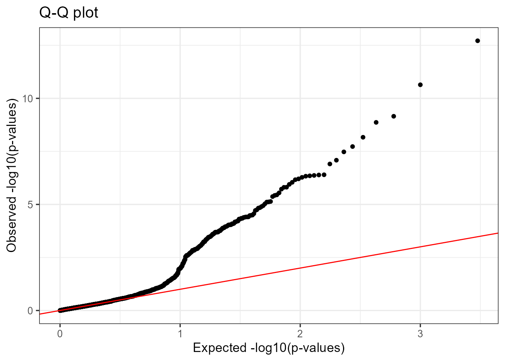
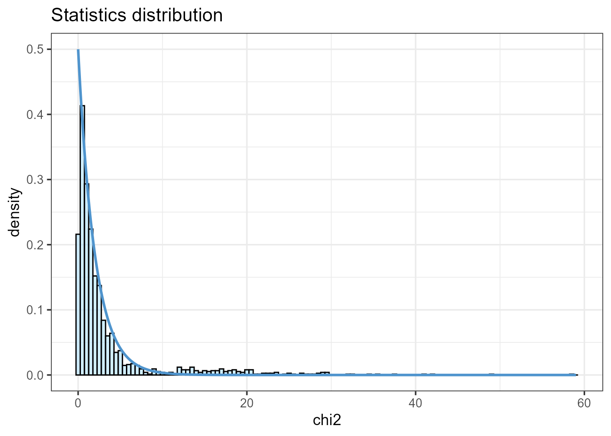
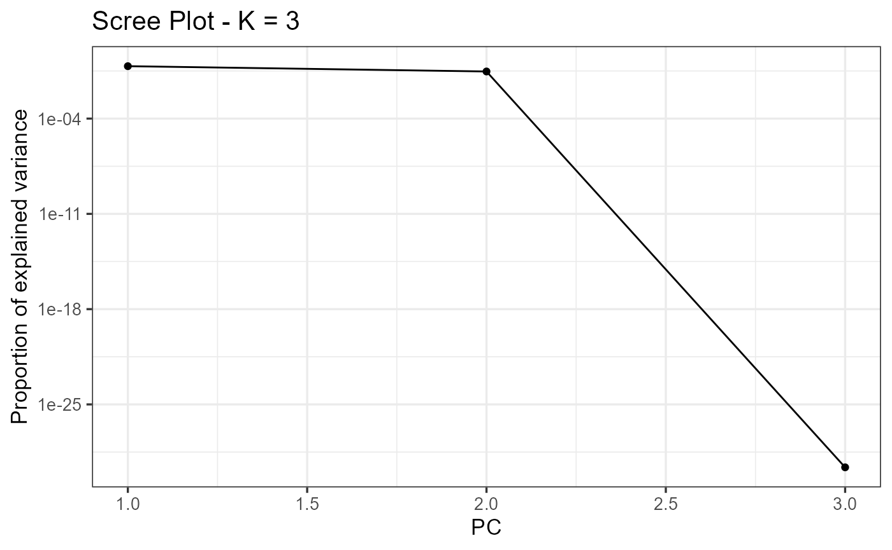
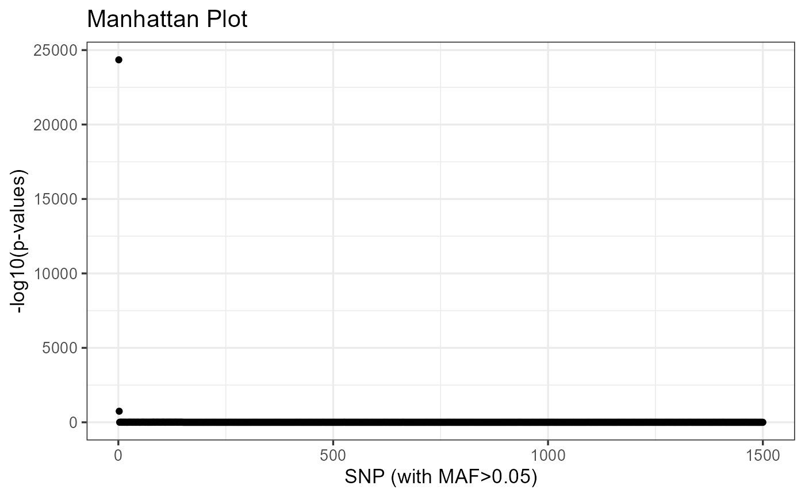
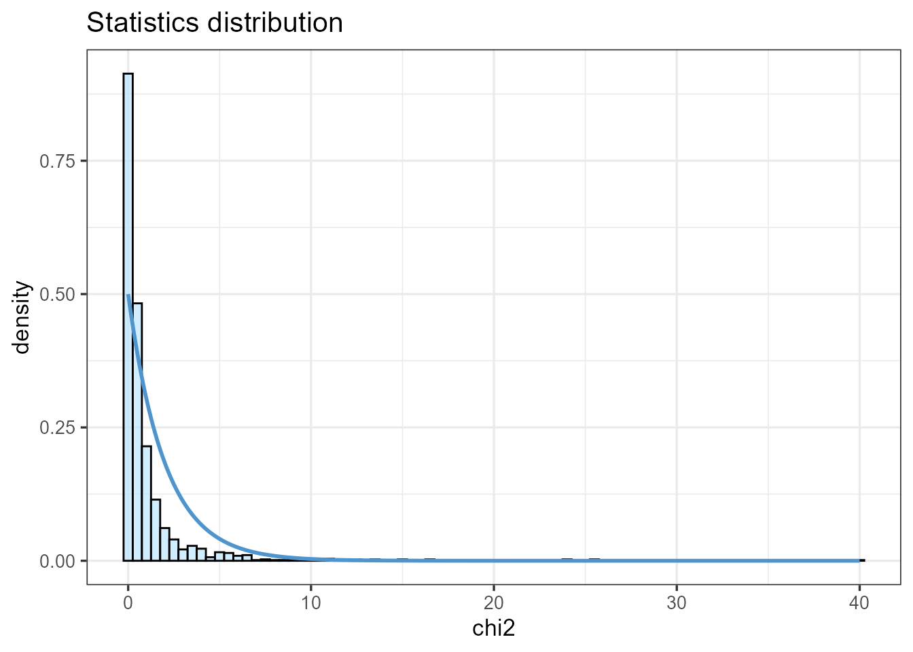

Using pcadapt to detect local adaptation
Keurcien Luu, Florian Privé, Michael G.B. Blum
Source:vignettes/pcadapt.Rmd
pcadapt.Rmdpcadapt has been developed to detect genetic markers involved in biological adaptation. pcadapt provides statistical tools for outlier detection based on Principal Component Analysis (PCA).
In the following, we show how the pcadapt package
can perform genome scans for selection based on individual genotype
data. We show how to run the package using the example
geno3pops that contains genotype data. A total of 150
individuals coming from three different populations were genotyped at
1,500 diploid markers. Simulations were performed with simuPOP using a divergence
model assuming that 150 SNPs confer a selective advantage. To run the
package on the provided example, just copy and paste shaded
R chunks.
To run the package, you need to install the package and load it using the following command lines:
install.packages("pcadapt")
library(pcadapt)A. Reading genotype data
You should use the read.pcadapt function to convert your
genotype file to the bed format, which is PLINK binary
biallelic genotype table. read.pcadapt converts
different types of files to the bed format and returns a
character string containing the name of the converted file, which should
be used as input for the pcadapt function. Supported
formats are the following: “pcadapt”, “lfmm”, “vcf”, “bed”, “ped”,
“pool”. pcadapt files should have individuals in columns,
SNPs in lines, and missing values should be encoded by a single
character (e.g. 9) different from 0, 1 or 2.
For example, assume your genotype file is called “foo.lfmm” and is located in the directory “path_to_directory”, use the following command lines:
path_to_file <- "path_to_directory/foo.lfmm"
filename <- read.pcadapt(path_to_file, type = "lfmm")To run the provided example, we retrieve the file location of the
example and we use read.pcadapt to convert the
bed example to the pcadapt format.
path_to_file <- system.file("extdata", "geno3pops.bed", package = "pcadapt")
filename <- read.pcadapt(path_to_file, type = "bed")When working with genotype matrices already loaded in the
R session, users have to run the read.pcadapt
function and to specify the typeargument, which can be
pcadapt (individuals in columns, SNPs in lines) or
lfmm (individuals in lines, SNPs in columns).
B. Choosing the number K of Principal Components
The pcadapt function performs two successive tasks.
First, PCA is performed on the centered and scaled genotype matrix. The
second stage consists in computing test statistics and p-values based on
the correlations between SNPs and the first K principal
components (PCs). To run the function pcadapt, the user
should specify the output returned by the function
read.pcadapt and the number K of principal
components to compute.
To choose K, principal component analysis should first
be performed with a large enough number of principal components
(e.g. K=20).
x <- pcadapt(input = filename, K = 20) NB: by default, data are assumed to be diploid. To
specify the ploidy, use the argument ploidy
(ploidy=2 for diploid species and ploidy = 1
for haploid species) in the pcadapt function.
B.1. Scree plot
The ‘scree plot’ displays in decreasing order the percentage of
variance explained by each PC. Up to a constant, it corresponds to the
eigenvalues in decreasing order. The ideal pattern in a scree plot is a
steep curve followed by a bend and a straight line. The eigenvalues that
correspond to random variation lie on a straight line whereas the ones
that correspond to population structure lie on a steep curve. We
recommend to keep PCs that correspond to eigenvalues to the left of the
straight line (Cattell’s rule). In the provided example,
K = 2 is the optimal choice for K. The plot
function displays a scree plot:
plot(x, option = "screeplot")## Warning: The `<scale>` argument of `guides()` cannot be `FALSE`. Use "none" instead as
## of ggplot2 3.3.4.
## ℹ The deprecated feature was likely used in the pcadapt package.
## Please report the issue at <
## This warning is displayed once every 8 hours.
## Call `lifecycle::last_lifecycle_warnings()` to see where this warning was
## generated.
By default, the number of principal components shown in the scree
plot is K, but it can be reduced via the argument
K.
plot(x, option = "screeplot", K = 10)
B.2. Score plot
Another option to choose the number of PCs is based on the ‘score
plot’ that displays population structure. The score plot displays the
projections of the individuals onto the specified principal components.
Using the score plot, the choice of K can be limited to the
values of K that correspond to a relevant level of
population structure.
When population labels are known, individuals of the same populations
can be displayed with the same color using the pop
argument, which should contain the list of indices of the populations of
origin. In the geno3pops example, the first population
is composed of the first 50 individuals, the second population of the
next 50 individuals, and so on. Thus, a vector of indices or characters
(population names) that can be provided to the argument pop
should look like this:
# With integers
poplist.int <- c(rep(1, 50), rep(2, 50), rep(3, 50))
# With names
poplist.names <- c(rep("POP1", 50),rep("POP2", 50),rep("POP3", 50))
print(poplist.int)## [1] 1 1 1 1 1 1 1 1 1 1 1 1 1 1 1 1 1 1 1 1 1 1 1 1 1 1 1 1 1 1 1 1 1 1 1 1 1
## [38] 1 1 1 1 1 1 1 1 1 1 1 1 1 2 2 2 2 2 2 2 2 2 2 2 2 2 2 2 2 2 2 2 2 2 2 2 2
## [75] 2 2 2 2 2 2 2 2 2 2 2 2 2 2 2 2 2 2 2 2 2 2 2 2 2 2 3 3 3 3 3 3 3 3 3 3 3
## [112] 3 3 3 3 3 3 3 3 3 3 3 3 3 3 3 3 3 3 3 3 3 3 3 3 3 3 3 3 3 3 3 3 3 3 3 3 3
## [149] 3 3
print(poplist.names)## [1] "POP1" "POP1" "POP1" "POP1" "POP1" "POP1" "POP1" "POP1" "POP1" "POP1"
## [11] "POP1" "POP1" "POP1" "POP1" "POP1" "POP1" "POP1" "POP1" "POP1" "POP1"
## [21] "POP1" "POP1" "POP1" "POP1" "POP1" "POP1" "POP1" "POP1" "POP1" "POP1"
## [31] "POP1" "POP1" "POP1" "POP1" "POP1" "POP1" "POP1" "POP1" "POP1" "POP1"
## [41] "POP1" "POP1" "POP1" "POP1" "POP1" "POP1" "POP1" "POP1" "POP1" "POP1"
## [51] "POP2" "POP2" "POP2" "POP2" "POP2" "POP2" "POP2" "POP2" "POP2" "POP2"
## [61] "POP2" "POP2" "POP2" "POP2" "POP2" "POP2" "POP2" "POP2" "POP2" "POP2"
## [71] "POP2" "POP2" "POP2" "POP2" "POP2" "POP2" "POP2" "POP2" "POP2" "POP2"
## [81] "POP2" "POP2" "POP2" "POP2" "POP2" "POP2" "POP2" "POP2" "POP2" "POP2"
## [91] "POP2" "POP2" "POP2" "POP2" "POP2" "POP2" "POP2" "POP2" "POP2" "POP2"
## [101] "POP3" "POP3" "POP3" "POP3" "POP3" "POP3" "POP3" "POP3" "POP3" "POP3"
## [111] "POP3" "POP3" "POP3" "POP3" "POP3" "POP3" "POP3" "POP3" "POP3" "POP3"
## [121] "POP3" "POP3" "POP3" "POP3" "POP3" "POP3" "POP3" "POP3" "POP3" "POP3"
## [131] "POP3" "POP3" "POP3" "POP3" "POP3" "POP3" "POP3" "POP3" "POP3" "POP3"
## [141] "POP3" "POP3" "POP3" "POP3" "POP3" "POP3" "POP3" "POP3" "POP3" "POP3"If this field is left empty, the points will be displayed in black.
By default, if the values of i and j are not
specified, the projection is done onto the first two principal
components.
plot(x, option = "scores", pop = poplist.int)## Warning: Use of `df$Pop` is discouraged.
## ℹ Use `Pop` instead.
plot(x, option = "scores", pop = poplist.names)## Warning: Use of `df$Pop` is discouraged.
## ℹ Use `Pop` instead.Looking at population structure beyond K = 2 confirms
the results of the scree plot. The third and the fourth principal
components do not ascertain population structure anymore.
plot(x, option = "scores", i = 3, j = 4, pop = poplist.names)## Warning: Use of `df$Pop` is discouraged.
## ℹ Use `Pop` instead.
C. Computing the test statistic based on PCA
For a given SNP, the test statistic is based on the \(z\)-scores obtained when regressing SNPs
with the K principal components. The test statistic for
detecting outlier SNPs is the Mahalanobis distance, which is a
multi-dimensional approach that measures how distant is a point from the
mean. Denoting by \(z^j = (z_1^j, \dots,
z_K^j)\) the vector of K \(z\)-scores between SNP \(j\) and the first K PCs, the
squared Mahalanobis distance is defined as
\[D_j^2 = (z^j - \bar{z})\Sigma^{-1}(z^j - \bar{z})\]
where \(\bar{z}\) and \(\Sigma\) are robust estimates of the mean
and of the covariance matrix. Once divided by a constant \(\lambda\) called the genomic inflation
factor, the scaled squared distances \(D_j^2/\lambda\) should have a chi-square
distribution with K degrees of freedom under the assumption
that there are no outlier.
For the geno3pops data, it was found in section B
that K=2 corresponds to the optimal choice of the number of
PCs.
x <- pcadapt(filename, K = 2)In addition to the number K of principal components to
work with, the user can also set the parameter min.maf that
corresponds to a threshold of minor allele frequency. By default, the
parameter min.maf is set to 5%. P-values of
SNPs with a minor allele frequency smaller than the threshold are not
computed (NA is returned).
The object x returned by the function
pcadapt contains numerical quantities obtained after
performing a PCA on the genotype matrix.
summary(x)We assume in the following that there are n individuals
and L markers.
scoresis a(n,K)matrix corresponding to the projections of the individuals onto each PC.singular.valuesis a vector containing theKordered square root of the proportion of variance explained by each PC.loadingsis a(L,K)matrix containing the correlations between each genetic marker and each PC.zscoresis a(L,K)matrix containing the \(z\)-scores.afis a vector of sizeLcontaining allele frequencies of derived alleles where genotypes of0are supposed to code for homozygous for the reference allele.mafis a vector of sizeLcontaining minor allele frequencies.chi2.statis a vector of sizeLcontaining the rescaled statisticsstat/gifthat follow a chi-squared distribution withKdegrees of freedom.gifis a numerical value corresponding to the genomic inflation factor estimated fromstat.pvaluesis a vector containingLp-values.passA list of SNPs indices that are kept after exclusion based on the minor allele frequency threshold.statis a vector of sizeLcontaining squared Mahalanobis distances by default.
All of these elements are accessible using the $ symbol.
For example, the p-values are contained in x$pvalues.
D. Graphical tools
D.1. Manhattan Plot
A Manhattan plot displays \(-\text{log}_{10}\) of the p-values.
plot(x , option = "manhattan")D.2. Q-Q Plot
The user can also check the expected uniform distribution of the p-values using a Q-Q plot
plot(x, option = "qqplot")
This plot confirms that most of the p-values follow the expected uniform distribution. However, the smallest p-values are smaller than expected confirming the presence of outliers.
D.3. Histograms of the test statistic and of the p-values
An histogram of p-values confirms that most of the p-values follow an uniform distribution. The excess of small p-values indicates the presence of outliers.
hist(x$pvalues, xlab = "p-values", main = NULL, breaks = 50, col = "orange")
The presence of outliers is also visible when plotting a histogram of the test statistic \(D_j\).
plot(x, option = "stat.distribution")## Warning: The dot-dot notation (`..density..`) was deprecated in ggplot2 3.4.0.
## ℹ Please use `after_stat(density)` instead.
## ℹ The deprecated feature was likely used in the pcadapt package.
## Please report the issue at <
## This warning is displayed once every 8 hours.
## Call `lifecycle::last_lifecycle_warnings()` to see where this warning was
## generated.
E. Choosing a cutoff for outlier detection
To provide a list of outliers and choose a cutoff for outlier detection, there are several methods that are listed below from the less conservative one to the more conservative one.
E.1. q-values
The R package qvalue,
transforms p-values into q-values. To install and load the package, type
the following command lines:
## try http if https is not available
source("https://bioconductor.org/biocLite.R")
biocLite("qvalue")
library(qvalue)For a given \(\alpha\) (real valued
number between \(0\) and \(1\)), SNPs with q-values less than \(\alpha\) will be considered as outliers
with an expected false discovery rate bounded by \(\alpha\). The false discovery rate is
defined as the percentage of false discoveries among the list of
candidate SNPs. Here is an example of how to provide a list of candidate
SNPs for the geno3pops data, for an expected false
discovery rate lower than 10%:
library(qvalue)
qval <- qvalue(x$pvalues)$qvalues
alpha <- 0.1
outliers <- which(qval < alpha)
length(outliers)F. Linkage Disequilibrium (LD) thinning
Linkage Disequilibrium can affect ascertainment of population structure (Abdellaoui et al. 2013). When working with RAD-seq data, it should not be an issue. However, users analyzing dense data such as whole genome sequence data or dense SNP data should account for LD in their genome scans.
In pcadapt, there is an option to compute PCs after SNP thinning. SNP thinning make use of two parameters: window size (default 200 SNPs) and \(r^2\) threshold (default 0.1). The genome scan is then performed by looking at associations between all SNPs and PCs ascertained after SNP thinning.
We provide below an example of data analysis using simulated data where there is a LD. Genotype data are stored in a matrix (individuals in columns and SNPs in lines). An analysis without SNP thinning can be performed as follows
path_to_file <- system.file("extdata", "SSMPG2017.rds", package = "pcadapt")
genotypes <- readRDS(path_to_file)
matrix <- read.pcadapt(genotypes, type = "pcadapt")
res <- pcadapt(matrix, K = 20)
plot(res, option = "screeplot")
Cattell’s rule indicates \(K=4\).

Because the data have been simulated, we know that outliers do not correspond to regions involved in adaptation but rather correspond to regions of low recombination (high LD).
To evaluate if LD might be an issue for your dataset, we recommend to display the loadings (contributions of each SNP to the PC) and to evaluate if the loadings are clustered in a single or several genomic regions.
par(mfrow = c(2, 2))
for (i in 1:4)
plot(res$loadings[, i], pch = 19, cex = .3, ylab = paste0("Loadings PC", i))Here, the top-left figure shows that PC1 is determined by a single genomic region, which is likely to be a region of strong LD.
We should therefore thin SNPs in order to compute the PCS.
res <- pcadapt(matrix, K = 20, LD.clumping = list(size = 200, thr = 0.1))
plot(res, option = "screeplot")
After SNP thinning, we choose \(K=2\).
res <- pcadapt(matrix, K = 2, LD.clumping = list(size = 200, thr = 0.1))
par(mfrow = c(1, 2))
for (i in 1:2)
plot(res$loadings[, i], pch = 19, cex = .3, ylab = paste0("Loadings PC", i))The distribution of the loadings is now evenly distributed, so we can have a look at the genome scan, which correctly identifies regions involved in adaptation.
plot(res)
G. Detecting local adaptation with pooled sequencing data
For Pool-seq samples, the package also uses the
read.pcadapt function.
We assume that the user provides a matrix of relative frequencies
with n rows and L columns (where
n is the number of populations and L is the
number of genetic markers). Assume your frequency file is called “foo”
and is located in the directory “path_to_directory”, use the following
command lines:
pool.data <- read.pcadapt("path_to_directory/foo", type = "pool")You can also directly input an R matrix to
read.pcadapt() if you want.
A Pool-seq example is provided in the package, and can be loaded as follows:
path_to_file <- system.file("extdata", "pool3pops", package = "pcadapt")
pool.data <- read.pcadapt(path_to_file, type = "pool")With Pool-Seq data, the package computes again a Mahalanobis distance based on PCA loadings.
Computation of Mahalanobis distances is performed as follows
## Length Class Mode
## scores 9 -none- numeric
## singular.values 3 -none- numeric
## loadings 4500 -none- numeric
## zscores 4500 -none- numeric
## af 1500 -none- numeric
## maf 1500 -none- numeric
## chi2.stat 1500 -none- numeric
## stat 1500 -none- numeric
## gif 1 -none- numeric
## pvalues 1500 -none- numeric
## pass 1500 -none- numeric`res’ is a list containing the same elements than when using individual genotype data.
A scree plot can be obtained and be possibly used to reduce
K. If the number of populations n is too
small, it is impossible to use the scree plot to choose K
and the default value of \(K=n-1\)
should be used.
plot(res, option = "screeplot")
A Manhattan plot can be displayed.
plot(res, option = "manhattan")
A list of outliers can be obtained as for individual genotype data
padj <- p.adjust(res$pvalues, method = "BH")
alpha <- 0.1
outliers <- which(padj < alpha)
length(outliers)## [1] 119The function get.pcis also available for pooled-seq data
(see H.3).
## [1] 3 3 1 1 1 1 1 1 1 1 1 1 1 1 1 1 1 1 1 1 1 1 1 1 1 1 1 1 1 1 1 1 1 1 1 1 1
## [38] 1 1 1 1 1 1 1 1 1 1 1 1 1 1 1 1 1 1 1 1 1 1 1 1 1 1 1 1 1 1 1 1 1 1 1 1 1
## [75] 1 2 2 2 2 2 2 2 2 2 2 2 1 1 2 1 2 1 2 2 2 1 1 2 2 2 2 2 2 2 2 2 2 2 2 2 2
## [112] 2 2 2 1 2 2 2 2 2 2 2 1 2 2 2 2 1 2 1 2 2 2 2 2 2 2 2 2 1 2 2 2 2 2 2 2 1
## [149] 2 1Most of the 75 first SNPs are more related to the differentiation corresponding to the first PC whereas the following 75 SNPs are mostly related to the differentiation corresponding to the second PC (in the simulations, these 2 sets of SNPs have been involved in adaptation occurring in different parts of the population divergence tree).
H. Miscellaneous
H.1. Missing values
The package accepts missing values. Computation of PCs and of P-values accounts for missing values. Missing values should be encoded by a single character (e.g. 9) different from 0, 1 or 2.
H.2. Run pcadapt on matrices loaded in memory
pcadapt can be called on matrices loaded in memory
instead of using a file. When calling the function
read.pcadapt, users should specify if individuals are in
columns, and SNPs in lines (type = “pcadapt”) or if individuals are in
lines, and SNPs in columns (type = lfmm).
path_to_file <- system.file("extdata", "SSMPG2017.rds", package = "pcadapt")
genotypes <- readRDS(path_to_file)
print(dim(genotypes))
matrix <- read.pcadapt(genotypes, type = "pcadapt")
res <- pcadapt(matrix, K = 20)
plot(res, option = "screeplot")H.3. Association between PCs and outliers
It may be interesting to associate outliers with one of the
K principal component to have indication about evolutionary
pressure. The function get.pc allows to achieve that:
snp_pc <- get.pc(x, outliers)H.4 Component-wise genome scans
Another possibility is to perform one genome scan for each principal component (component-wise p-values). The test statistics are the loadings, which correspond to the correlations between each PC and each SNP. P-values are computed by making a Gaussian approximation for each PC and by estimating the standard deviation of the null distribution.
path_to_file <- system.file("extdata", "geno3pops.bed", package = "pcadapt")
filename <- read.pcadapt(path_to_file, type = "bed")
x_cw <- pcadapt(filename, K = 2, method = "componentwise")
summary(x_cw$pvalues)## V1 V2
## Min. :0.0000 Min. :0.0000
## 1st Qu.:0.1434 1st Qu.:0.3259
## Median :0.4229 Median :0.5724
## Mean :0.4322 Mean :0.5514
## 3rd Qu.:0.6882 3rd Qu.:0.7971
## Max. :0.9999 Max. :0.9995pcadapt returns K vectors of p-values (one
for each principal component), all of them being accessible, using the
$ symbol or the [] symbol. For example, typing
x_cw$pvalues$p2 or x_cw$pvalues[,2] in the
R console returns the list of p-values associated with the
second principal component (provided that K is larger than
or equal to 2).
The p-values are computed based on the matrix of loadings. The loadings of the neutral markers are assumed to follow a centered Gaussian distribution. The standard deviation of the Gaussian distribution is estimated using the median absolute deviation.
To display the neutral distribution for the component-wise case, the
value of K has to be specified.
plot(x_cw, option = "stat.distribution", K = 2)
Main references
Privé, F., Luu, K., Vilhjálmsson, B. J., & Blum, M. G.B. (2020). Performing highly efficient genome scans for local adaptation with R package pcadapt version 4. Molecular Biology and Evolution.
Luu, K., Bazin, E., & Blum, M. G.B. (2017). pcadapt: an R package to perform genome scans for selection based on principal component analysis. Molecular Ecology Resources, 17(1), 67-77.